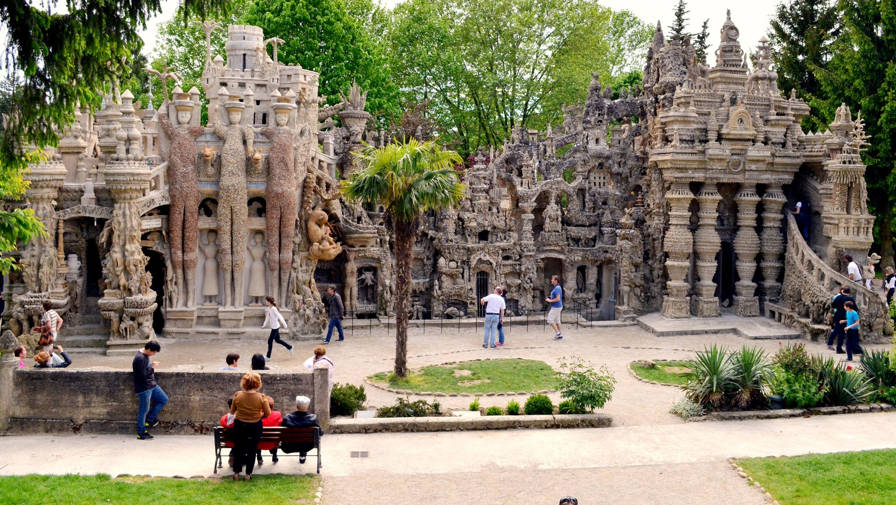

Op ongeveer 1u15 van Les Cabritas, in Hauterives in het noorden van de Drôme, staat een van de verbazingwekkendste bouwwerken van Frankrijk: een droompaleis dat een gewone plattelandspostbode in 33 jaar met de hand bouwde, steen voor steen.

Het verhaal van een droom die uitkwam
In april 1879 struikelde Ferdinand Cheval, een 43-jarige plattelandspostbode, over een steen met zo'n vreemde vorm dat die een oude droom in hem wakker maakte. Als autodidact besteedde hij daarna 33 jaar van zijn leven, zijn postrondes en zijn nachten aan het bouwen van een paleis in zijn tuin, geïnspireerd door de natuur en door de ansichtkaarten en geïllustreerde tijdschriften die hij onderweg bezorgde. Zelf beitelde hij de balans van dit werk in de noordgevel: '10.000 dagen, 93.000 uur, 33 jaar beproeving.'
Een werk van naïeve kunst, geprezen door de groten
Vanaf 1 januari 1905 stelde Ferdinand Cheval zijn paleis zelf open voor publiek, met een gastenboek en een kassa. Zijn faam reikte al snel verder dan de Drôme: al in 1907 kwamen buitenlandse bezoekers naar Hauterives. Pas in de jaren 1930 prezen kunstenaars als Pablo Picasso, André Breton en Max Ernst postuum het genie van deze autodidact, die een ijkpunt van de naïeve kunst werd. Le Palais Idéal werd in 1969 beschermd historisch monument, een zeldzame onderscheiding voor een werk van outsiderkunst.
Goed om te weten voor uw bezoek
Reken op een goed uur om de gebeeldhouwde gevels, torentjes en binnengalerijen van het paleis te verkennen, en ook het mausoleum dat Cheval later op het dorpskerkhof bouwde. Een museumruimte maakt het bezoek compleet en legt uit hoe dit unieke werk tot stand kwam. De toegang is betalend, met een verlaagd tarief voor kinderen.
Praktische informatie vanuit Les Cabritas
- Afstand vanaf Flaviac: ongeveer 1u15 rijden
- Beste periode: het hele jaar, grotendeels overdekt
- Ideaal voor: een bijzonder uitje, erfgoed, naïeve kunst, dagjes uit met het gezin
Zin om Le Palais Idéal du Facteur Cheval te ontdekken vanuit uw vakantiehuis in de Ardèche?
Les Cabritas verwelkomt u in Flaviac, in het hart van de Ardèche, voor een comfortabel verblijf met privézwembad, vlak bij de mooiste plekken van de streek.
Beschikbaarheid bekijken